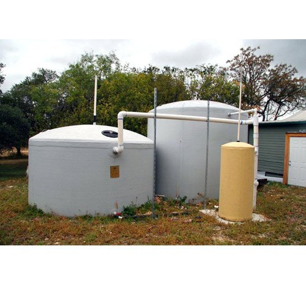

SUNOCO TANK

A Sanoco tank typically refers to a type of industrial or commercial storage tank made from materials designed to withstand various chemical, temperature, and environmental conditions. While there isn't a widespread reference to "Sanoco" specifically in industrial tank terminology, it seems like you're asking about Sanco tanks, which could be associated with a variety of industries and applications. I’ll give you an overview of how these
tanks generally work, their uses, and features, based on common applications of industrial storage tanks.
- Advantages of Sunoco Tank
- Disadvantages of Sunoco Tank
The Sanoco tank (or similarly named tank, assuming it's referring to a specific brand or type of industrial tank) can be used for a variety of purposes in different industries, depending on its design, material, and capacity. Here's an outline of common uses
for these tanks, assuming they are designed for general industrial, commercial, or agricultural applications:
- Chemical Storage
Sanoco tanks (or similar tanks) are often used in industries that require safe and effective storage of chemicals. Depending on the material of the tank, they may be designed to resist corrosion from aggressive chemicals, such as acids, bases, solvents, or oils.
- Application: Chemical manufacturing plants, laboratories, or industrial facilities.
- Features: Resistant to harsh chemicals, pressure-resistant, and may have venting or leak-proof features for safety.
- Water Treatment
In water and wastewater treatment plants, Sanoco tanks could be used to store raw water, treated water, or wastewater. These tanks must meet the necessary environmental and safety standards.
- Application: Water treatment plants, sewage treatment facilities, or potable water storage.
- Features: Could include filtration, chlorination, or disinfection systems, depending on the use case.
Sunoco tanks, especially those used for fuel storage and distribution, come with several key features designed for safety, efficiency, and performance. Here are some notable features you can typically find in Sunoco fuel storage tanks:
- Durability & Material
Sanoco tanks (or similar tanks) are often used in industries that require safe and effective storage of chemicals. Depending on the material of the tank, they may be designed to resist corrosion from aggressive chemicals, such as acids, bases, solvents, or oils.
- Steel or Fiberglass Construction: Sunoco tanks are made from high-quality materials like steel or fiberglass, which are durable, resistant to corrosion, and capable of withstanding harsh environments.
- Long Lifespan: The construction ensures a long operational life, reducing the need for frequent replacements.
- Safety Features
Leak Prevention Systems: Sunoco tanks are designed with advanced leak detection systems to prevent fuel spills, which are crucial for minimizing environmental impact and preventing accidents.
- Vapor Recovery Systems: Some Sunoco tanks are equipped with vapor recovery technology to capture fuel vapors during dispensing, reducing air pollution and ensuring regulatory compliance.
- Overfill Prevention: Many tanks have overfill protection mechanisms to stop fuel from overflowing during refueling operations.
Sunoco offers a variety of fuel storage tanks designed for different applications, ranging from fuel stations to motorsports. Here’s an overview of some types of Sunoco tanks based on their usage:
- Underground Storage Tanks (USTs)
Purpose: These are the most common type of fuel storage tanks used in gas stations. They are installed underground to store large quantities of gasoline, diesel, or other fuels.
- Typically made of steel, fiberglass, or a combination of both.
- Equipped with safety and leak detection systems.
- Aboveground Storage Tanks (ASTs)
Purpose: Used for storing fuel above the ground at refueling stations, fuel depots, or distribution centers.
- Made from steel or fiberglass and can be large or small depending on the storage needs.
- Easier to inspect and maintain than underground tanks.
Advantages of Sunoco Tank
Sunoco tanks offer several advantages due to their design, safety features, and efficiency. Here’s a breakdown of the key benefits of using Sunoco tanks:
- Safety and Reliability
Sanoco tanks (or similar tanks) are often used in industries that require safe and effective storage of chemicals. Depending on the material of the tank, they may be designed to resist corrosion from aggressive chemicals, such as acids, bases, solvents, or oils.
- Overfill Protection: Many Sunoco tanks include overfill prevention systems, reducing the risk of spills and ensuring that fuel is dispensed safely.
- Pressure and Temperature Monitoring: Sunoco tanks are often equipped with sensors that monitor internal pressure and temperature to prevent accidents, ensuring that the tank operates within safe limits.
- Summary of Advantages:
Leak Prevention Systems: Sunoco tanks are designed with advanced leak detection systems to prevent fuel spills, which are crucial for minimizing environmental impact and preventing accidents.
- Safety: Advanced leak detection, overfill protection, and vapor recovery.
- Environmental Protection: Compliance with regulations and spill containment.
- Durability: Long lifespan with corrosion-resistant materials.
- Efficiency: Fast dispensing, fuel management integration, and customizable options.
Disadvantages of Sunoco Tank
While Sunoco tanks offer numerous advantages, there are also some potential disadvantages to consider, depending on the specific application and usage. Here are some of the key drawbacks associated with Sunoco tanks:
- High Initial Cost
Expensive Upfront Investment: Due to their high-quality materials, advanced safety features, and durable construction, Sunoco tanks can have a higher initial cost compared to cheaper, lower-quality alternatives. For businesses with limited budgets, the upfront investment in these tanks may be a significant expense.
- Additional Setup Costs: The installation of Sunoco tanks may require specialized equipment or professional services, adding to the overall setup costs.